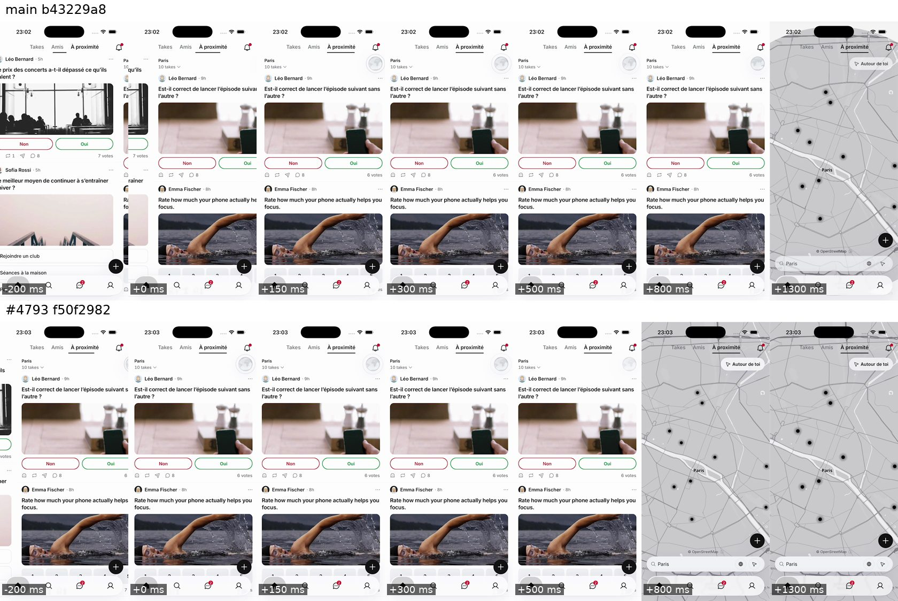
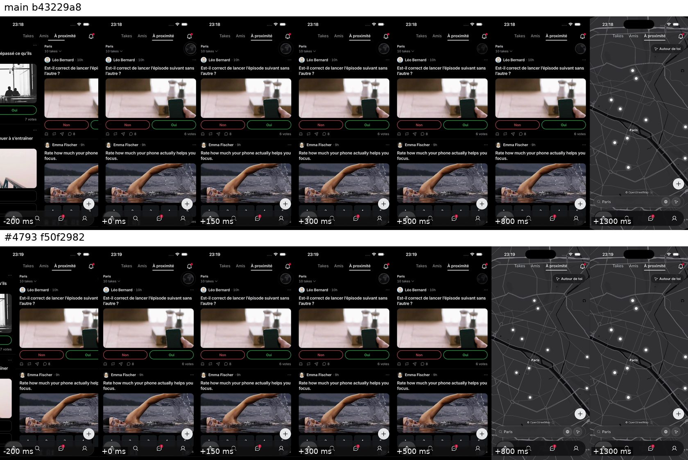
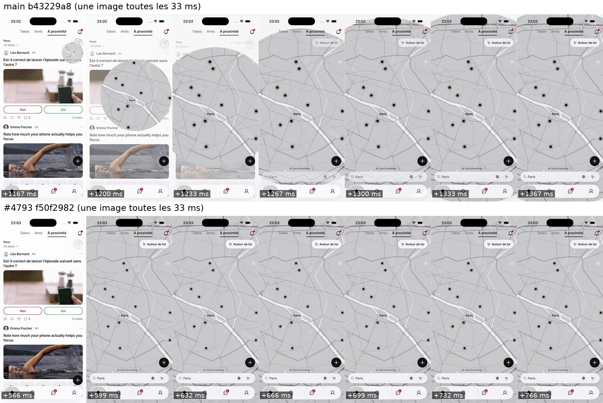
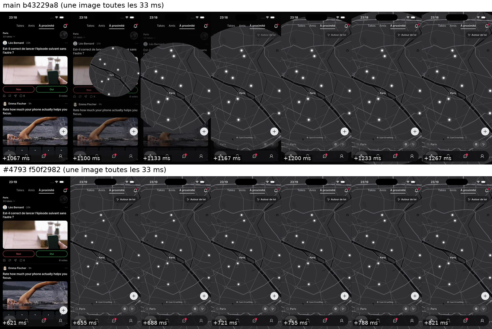

iPhone 16 Pro sur Limrun, en Release. Le toucher sur « À proximité » arrive 10 s après le lancement, puis le toucher sur le globe 1 s plus tard. Les temps sont comptés depuis le toucher sur le globe.
Sur chaque image, main (le build actuel) est en haut, la version qui part dans le 196 en bas.
La fluidité a été mesurée sur six paires : le défilement d'Amis, le lancement et la glissade vers À proximité restent au niveau de main.



